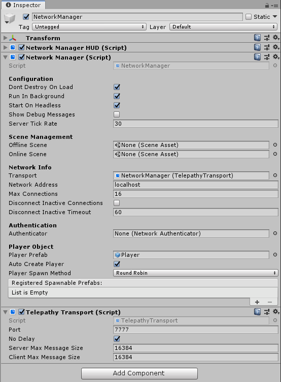
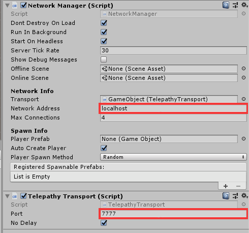
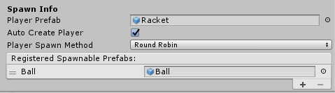

Network Manager
The Network Manager is a component for managing the networking aspects of a multiplayer game.
The Network Manager features include:
- Game state management
- Spawn management
- Scene management
- Debugging information
- Customization
Getting Started with the Network Manager
The Network Manager is the core controlling component of a multiplayer game. To get started, create an empty game object in your starting Scene, and add the Network Manager component. The newly added Network Manager component looks like this:

The Inspector for the Network Manager in the Editor allows you to configure and control many things related to networking.
Note: You can only ever have one active Network Manager in each scene because it's a singleton. Do not place the Network Manager component on a networked game object (one which has a Network Identity component), because Mirror disables these when the Scene loads.
If you are already familiar with multiplayer game development, you might find it useful to know that the Network Manager component is implemented entirely using the API, so everything it does is also available to you through scripting. For advanced users, if you find that you need to expand on the Network Manager component’s features, you can use scripting to derive your own class from Network Manager and customize its behavior by overriding any of the virtual function hooks that it provides. However, the Network Manager component wraps up a lot of useful functionality into a single place, and makes creating, running and debugging multiplayer games as simple as possible.
Transports
Mirror's uses a separate component (derived from the Transport class) to connect across the network. By default, it is Telepathy Transport. This design choice of separating the transport into its own component allows game developers to choose the transport that best fits their game needs. Changing transports is as simple as swapping out the component on the Network Manager object and assigning it to the Transport field.
Transports are available for TCP, UDP, WebGL, and Steam. Additionally, there's a Multiplex transport that allows for using two transports together on the server, e.g. Telepathy and WebSockets, so that desktop and browser players can play together on the same server seamlessly. See Transports for more information.
Game State Management
A Networking multiplayer game can run in three modes - as a client, as a dedicated server, or as a host which is both a client and a server at the same time.
If you’re using the Network Manager HUD, it automatically tells the Network Manager which mode to start in, based on which button the player clicks. If you’re writing your own UI that allows the player to start the game, you’ll need to call these from your own code. These methods are:
- NetworkManager.StartClient
- NetworkManager.StartServer
- NetworkManager.StartHost

Whichever mode the game starts in (client, server, or host), the Network Address and Transport Port properties are used.
- In client mode, the game attempts to connect to the address and port specified. A fully-qualified domain name (FQDN) can also be used for the Network Address, e.g. "game.example.com".
- In server or host mode, the game listens for incoming connections on the port specified, but does not bind to any specific IP address (it listens on all available).
Spawn Management
Use the Network Manager to manage the spawning (networked instantiation) of networked game objects from Prefabs.

Most games have a Prefab which represents the player, so the Network Manager has a Player Prefab slot. You should assign this slot with your player Prefab. When you have a player Prefab set, a player game object is automatically spawned from that Prefab for each user in the game. This applies to the local player on a hosted server, and remote players on remote clients. You must attach a Network Identity component to the Player Prefab before assigning it to this field.
Once you have assigned a Player Prefab, you can start the game as a host and see the player game object spawn. Stopping the game destroys the player game object . If you build and run another copy of the game and connect it as a client to localhost, the Network Manager makes another player game object appear. When you stop that client, it destroys that player’s game object .
In addition to the Player Prefab, you must also register other prefabs that you want to dynamically spawn during game play with the Network Manager.
You can add prefabs to the list shown in the inspector labelled Registered Spawnable Prefabs. You can also register prefabs via code, with the ClientScene.RegisterPrefab method.
If you have one Network Manager that is persisted through scenes via Don't Destroy On Load (DDOL), you need to register all prefabs to it which might be spawned in any scene. If you have a separate Network Manager in each scene, you only need to register the prefabs relevant for that scene.
Start Positions
The Network Manager will spawn Player Prefab at their defined transform position and rotation by default, however the Player Spawn Method property allows you to control how start positions are chosen in conjunction with Network Start Position components.
- Choose Random to spawn players at randomly chosen startPosition options.
- Choose Round Robin to cycle through startPosition options in a set list.
If the Random or Round Robin modes don’t suit your game, you can customize how the start positions are selected by using code. You can access the available Network Start Position components by the list NetworkManager.startPositions, and you can use the helper method GetStartPosition on the Network Manager that can be used in an implementation of OnServerAddPlayer to find a start position.
Scene Management
Most games have more than one scene. At the very least, there is usually a title screen or starting menu scene in addition to the scene where the game is actually played. The Network Manager is designed to automatically manage scene state and scene transitions in a way that works for a multiplayer game.
There are two slots on the Network Manager inspector for scenes: the Offline Scene and the Online Scene. Dragging scene assets into these slots activates networked Scene Management.
When a server or host is started, the Online Scene is loaded. This then becomes the current network scene. Any clients that connect to that server are instructed to also load that scene. The name of this scene is stored in the networkSceneName property.
When the network is stopped, by stopping the server or host or by a client disconnecting, the offline Scene is loaded. This allows the game to automatically return to a menu scene when disconnected from a multiplayer game.
You can also change scenes while the game is active by calling ServerChangeScene. This makes all the currently connected clients change Scene too, and updates networkSceneName so that new clients also load the new Scene.
While networked Scene management is active, any calls to game state management functions such as StartHost or StopClient can cause scene changes. This applies to the runtime control UI. By setting up scenes and calling these methods, you can control the flow of your multiplayer game.
Note that scene change causes all the game objects in the previous scene to be destroyed.
You should normally make sure the Network Manager persists between Scenes, otherwise the network connection is broken upon a scene change. To do this, ensure the Don’t Destroy On Load checkbox is ticked in the inspector. However it is also possible to have a separate Network Manager in each scene with different settings, which may be helpful if you wish to control incremental prefab loading, or different scene transitions.
Customization
There are virtual functions on the NetworkManager class that you can customize by creating your own derived class that inherits from NetworkManager. When implementing these functions, be sure to take care of the functionality that the default implementations provide. For example, in OnServerAddPlayer, the function NetworkServer.AddPlayer must be called to activate the player game object for the connection.
Properties
dontDestroyOnLoad
Use this property to control whether or not Mirror should destroy the game object with the Network Manager when the Scene changes. Tick this checkbox to ensure Mirror does not destroy your Network Manager game object when the Scene changes in your game. Untick the checkbox if you want Mirror to destroy the game object when the Scene it exists in is no longer the active Scene. This is useful if you want to manage multiple, separate Network Manager game objects in each of your Scenes. This checkbox is ticked by default.runInBackground
Use this property to control whether the networked game runs when the window it is running in is not focused. Tick the checkbox if you want it to run; untick it if you want the game to stop running when the window is not focused. This checkbox is ticked by default. You need to enable this property if you want to run multiple instances of a program on the same machine, such as when testing using localhost. You should disable it when deploying to mobile platforms. When enabled, it sets Application.runInBackground to true when the Network Manager starts up. You can also set this property from the Unity menu: Edit > Project Settings, then select the Player category, and navigate to the Resolution and Presentation panel.startOnHeadless
If this box is checked (property is true) and computer that runs the program has no graphic device, program will start in server mode.serverTickRate
Sets the target frame rate for the server. Default is 30.showDebugMessages
Use this property to control the amount of information Mirror outputs to the console window.offlineScene
If you assign a Scene to this field, the Network Manager automatically switches to the specified Scene when a network session stops - for example, when the client disconnects, or when the server shuts down.onlineScene
If you assign a Scene to this field, the Network Manager automatically switches to the specified Scene when a network session starts - for example, when the client connects to a server, or when the server starts listening for connections.Network Info
transport
A link to a Component derived fromTransportclass. TelepathyTransport is created and linked there by default.networkAddress
The network address currently in use. For clients, this is the address of the server that is connected to. For servers, this is the local address. This is set to ‘localhost’ by default. A Fully Qualified Domain Name (FQDN) can be used by clients in this field.maxConnections
Maximum number of clients connected to a server. Note that host is a server and one client. Transports may also have their own setting for this, otherwise they either copy this value or leave it to Mirror to manage the limit.
SpawnInfo
You can expand this section of the inspector to access spawn-related settings, listed belowplayerPrefab
Define the default prefab Mirror should use to create player game objects on the server. Mirror creates Player game objects in the default handler for AddPlayer on the server. Implement OnServerAddPlayer to override this behavior.autoCreatePlayer
Tick this checkbox if you want Mirror to automatically create player game objects on connect, and when the Scene changes. This checkbox is ticked by default.playerSpawnMethod
Define how Mirror should decide where to spawn new player game objects. This is set to Random by default.random
Choose Random to spawn players at randomly chosenstartPositions.roundRobin
Choose Round Robin to cycle through startPositions in a set list.
spawnPrefabs
List of prefabs registered in the Network ManagerstartPositions
List of Transforms built from all game objects in the scene with a Network Start Position component.clientLoadedScene
Bool that indicates that the client has loaded the current scenenumPlayers
Returns the number of active connections fromNetworkServer. Only valid on the server.networkSceneName
Name of currently loaded and active scene.isNetworkActive
Bool indicating that the server is online or the client is connected.client
Returns theNetworkClient.singleton.isHeadless
Bool that indicates of the application was started in headless mode.
Methods
Unity Virtual Callbacks
public virtual void Awake() {}
public virtual void Start() {}
Server Methods
public bool StartServer() {}
public void StartClient() {}
public void StopHost() {}
public void StopServer() {}
public void StopClient() {}
public Transform GetStartPosition() {}
Server Static Methods
public static void RegisterStartPosition(Transform start) {}
public static void UnRegisterStartPosition(Transform start) {}
public static void Shutdown() {}
Server Virtual Methods
public virtual void ConfigureServerFrameRate() {}
public virtual void StartHost() {}
public virtual void ServerChangeScene(string newSceneName, LoadSceneMode sceneMode, LocalPhysicsMode physicsMode) {}
public virtual void OnServerConnect(NetworkConnection conn) {}
public virtual void OnServerDisconnect(NetworkConnection conn) {}
public virtual void OnServerReady(NetworkConnection conn) {}
public virtual void OnServerAddPlayer(NetworkConnection conn, AddPlayerMessage extraMessage) {}
public virtual void OnServerRemovePlayer(NetworkConnection conn, NetworkIdentity player) {}
public virtual void OnServerError(NetworkConnection conn, int errorCode) {}
public virtual void OnServerSceneChanged(string sceneName) {}
public virtual void OnStartHost() {}
public virtual void OnStartServer() {}
public virtual void OnStopServer() {}
public virtual void OnStopHost() {}
public virtual void OnDestroy() {}
Client Virtual Methods
public virtual void OnStartClient() {}
public virtual void OnStopClient() {}
public virtual void OnClientConnect(NetworkConnection conn) {}
public virtual void OnClientDisconnect(NetworkConnection conn) {}
public virtual void OnClientError(NetworkConnection conn, int errorCode) {}
public virtual void OnClientNotReady(NetworkConnection conn) {}
public virtual void OnClientChangeScene(string newSceneName, LoadSceneMode sceneMode) {}
public virtual void OnClientSceneChanged(NetworkConnection conn) {}